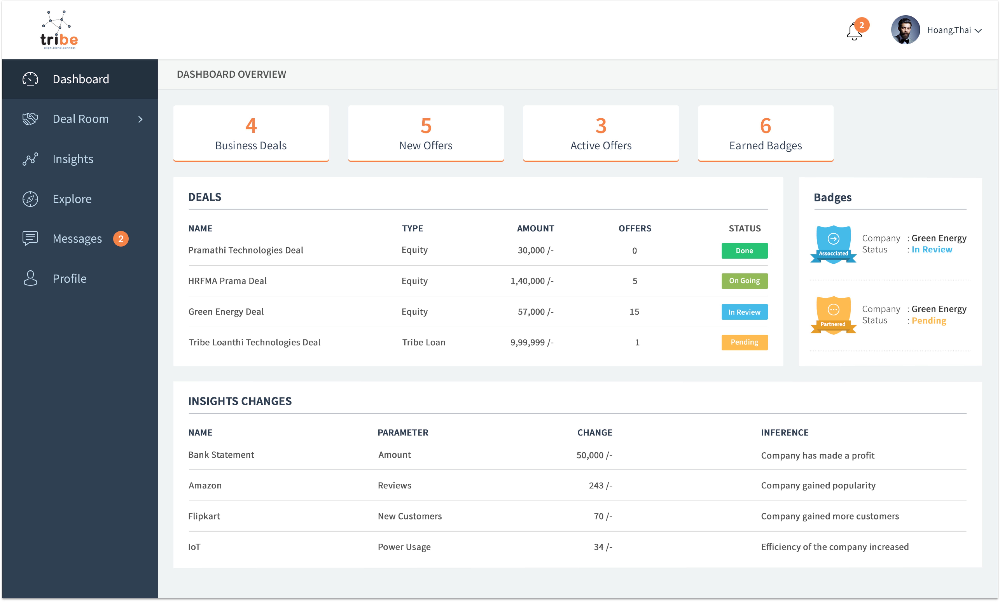
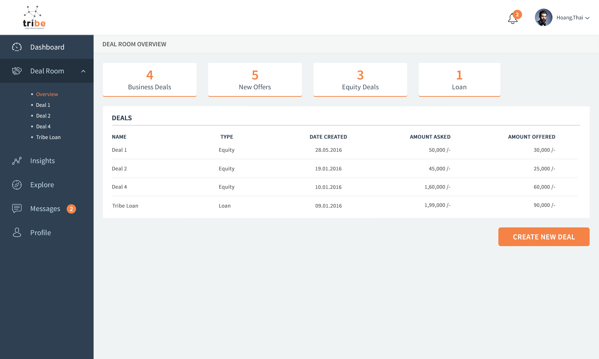
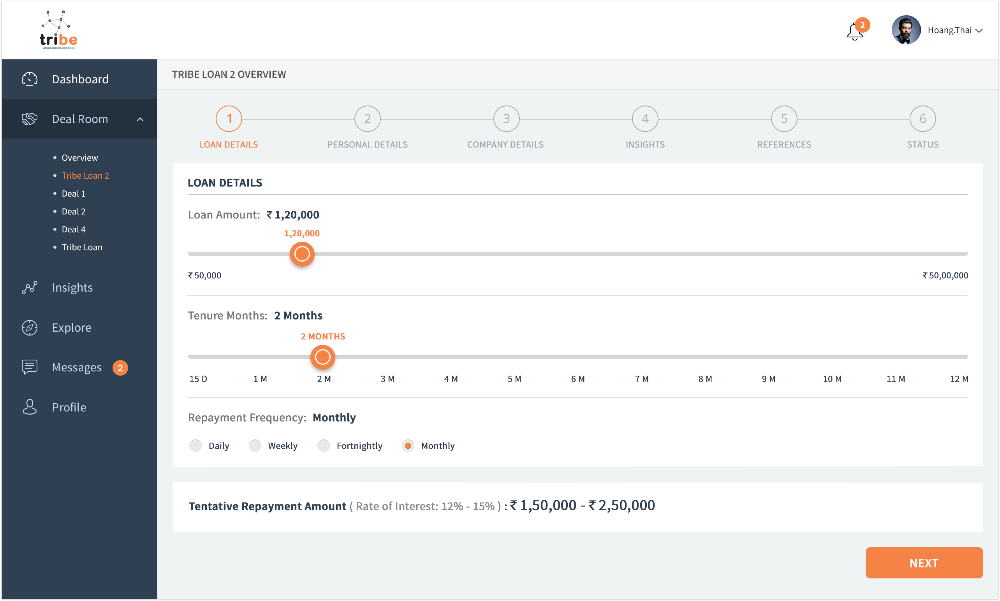

QUICK FACTS
- Role: User Experience Designer
- Timeline: August 2016 to June 2017
- Client: Aditya Birla Sun Life Mutual Fund
- Teammates: Sandeep Reddy (Design Lead), Anupam Chandra (Technical Lead)
- Skills: Research (Ethnographic + Guerrilla), User Stories, Prototyping, and Product Design/Management
PROBLEM
Tribe is a platform that allows people from all walks of life to take a loan. The issue with the website was that people were not completing the entire process at all. It was not intuitive at all.
SOLUTION
We redesigned the entire flow of the website to ensure that there was no breakdown in the flow. We also made sure that some of the steps were shortened to make the process smoother.

FINDING THE ISSUES
We conducted user research on a random selection of users from the list that Tribe had given to us. We not only conducted think alouds but also conducted heuristic evaluation for the entire website.
After the evaluation was done, the main pain points or breakdowns of the entire flow was then listed down. The issues were:
- Home Page
- Sign Up Flow
- Deal Room
- Insights

SOLUTION DESIGN
Now that we knew where the issues in the flow were, we decided to make take the Tribe Loan flow and optimize that. This way, we will cover all the steps from the home page and manage to address all the problems that are encountered by the users in the first place.
The changes that we did in the entire flow are as follows:
- Home Page
- I used the banner in a minimalistic way where I just had one action button that would take them to the sign up page.
- I used images looked more professional to give a better look to the page.
- I used words that the users would be familiar with. - Immediately after the banner, I highlighted the unique selling points of Tribe to convince the users to sign up.
- I then focused on telling the users about the way Tribe worked, the services provided by Tribe as well as the domains the Tribe is involved in.
Through the Home Page, I wanted the user to be well informed about Tribe before he signed up.
- Sign Up Flow
- I decided to optimize the sign up flow because the drop-off rate at this stage was the highest.
- In the previous flow, there were too many details that were being collected. I decided to get rid of that and ask the details in the profile creation page later in the flow.
This way, the sign up rate would increase because they just had to give their email ID and what they are signing up as to join the Tribe community.
- Dashboard
- Earlier, the dashboard was only related to the Insights tab. I changed this and created a dashboard where the user will get to know about the activity in his account like his deals, etc.

- I also used icons to display the badges because it was a new feature that was introduced by Tribe. Later, when badges become more common, the size of the icons can be resuced and another newly feature can be highlighted.
This works out really well because it brings the user upto speed with everything that has changed since the last time he logged in.
- Deal Room
- There was a summary of the deals given in the beginning of the section.

- There was one clear action button which was to create a new deal.
- Earlier, all the tabs were listed horizontally, I changed that to a vertical navigation menu on the left.
With this design, there was a lot of noise that was removed.
- Tribe Flexi Loan
- Initially, when you wanted to start a new deal, the pop-up would tell you all the different kinds of deal and also give you a little information about them, so that the user can make a well informed decision.

- The user can name the deals as well so that they could remember their different deals.
- All the details that needs to be filled out was done in a more interactive, efficient manner through the help of scroll bars and radio buttons. However, the user could always write the number directly.
- As soon as the main details were filled out, the user would be notified about the tentative repayment amount so that in case he is not comfortable with it, he can change the amount of loan he is asking for or even discard the deal without spending too much in the process.
- The personal details, company details and the insights would be populated here only once. After this, the database will prefill them whenever a new deal is created. This information will also be used in the user profile so the user does not have to fill the same details repeatedly.
This flow is a more optimized and does not need the user to fill unnecessary information that he does not need or want to show to potential investors or Tribe in general.
- Insights
- Insights is Tribe's USP. However, it requires a lot of integration with the existing system that a user might already have set up. The main idea was to make this process smoother and easier for the user.
- To do this, I introduced a system where they can easily see the insights they can add with the help of one action button.
- Once that was added, I also introduced an option to disable the insight in case the user does not think it is relavant for the investor to see the insight.
- In the home page, since there is constant tracking of the insight, Tribe gives inferences as well. This makes it more user friendly for a user who is not tech-savvy to understand what is happening in his business and then take decisions accordingly.
The simplification of the Insights feature had a positive impact and the user did appreciate the freedom to disable an insight and even delete it because earlier, this option was not given and the users thought that it will reduce their chances of getting a deal which made them very anxious.
After the entire design and flow was modeled, we conducted A/B testing with the new designs. The response was positive and the users were very happy with the new professional look that Tribe had. They also mentioned that they got information when they wanted which made them make more informed decisions faster then usual. We also noticed that the number of deals created increased and 36.5% of the deals came from people who ran small shops and are not technologically inclined. Tribe Flexi Loan also performed well and the users spent more time in curating the loan they are asking for. This worked out well because 76% of the loans were approved and accepted by the users.